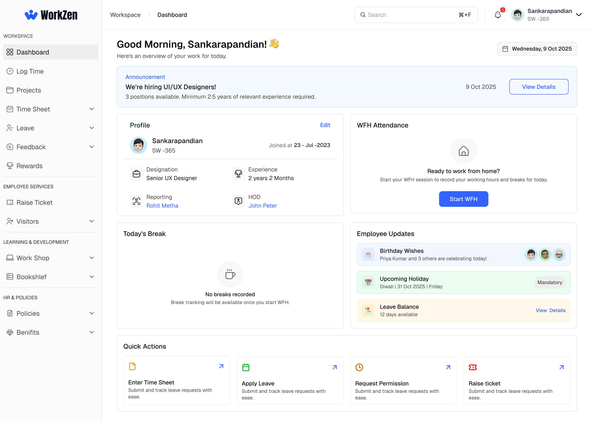
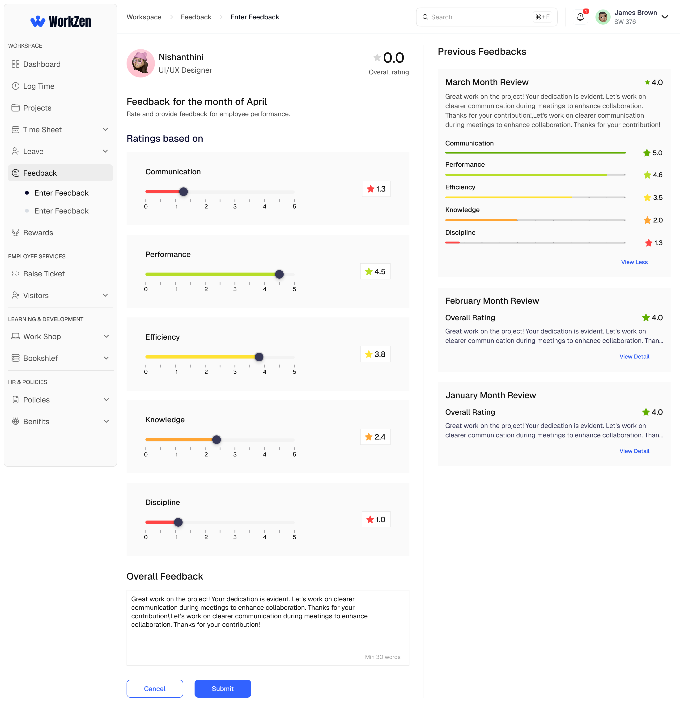
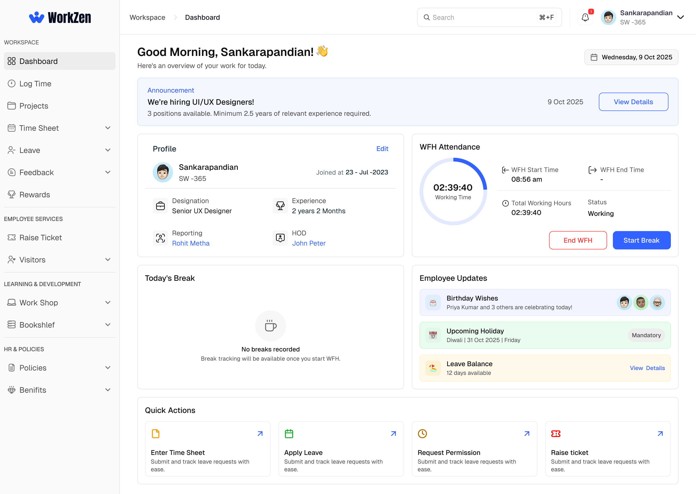
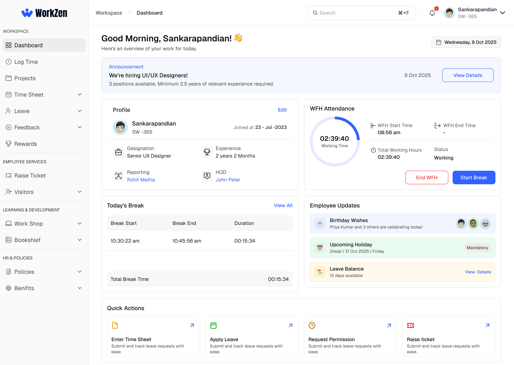
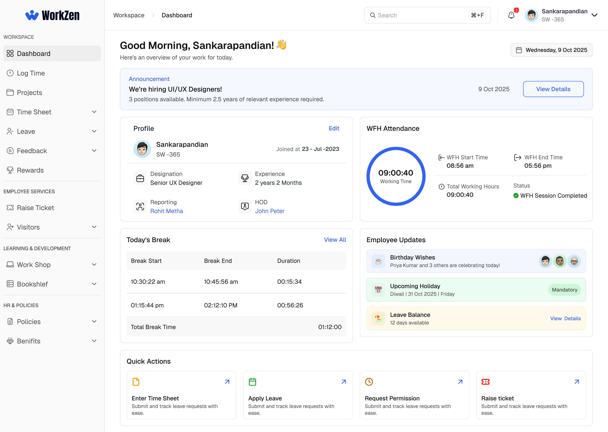
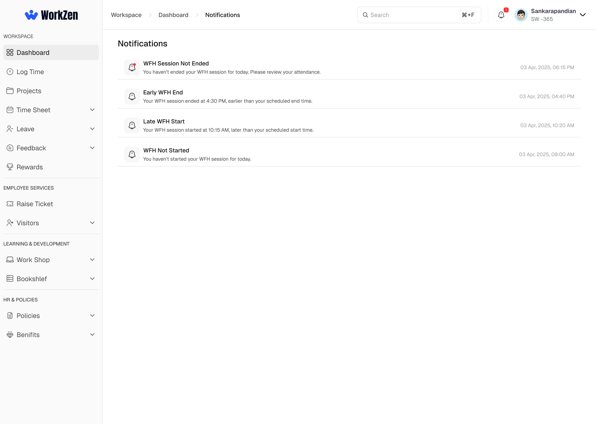

WorkZen / Attendance

WORKZEN / ENTERPRISE HRMS / UX CASE STUDY
Redesigning employee feedback and extending attendance workflows for remote work—within a broader HR management platform.

01 / OVERVIEW
WorkZen is an enterprise HRMS covering attendance, timesheets, leave and employee feedback. My focus here: clearer performance conversations and a new work-from-home attendance flow built into the existing product.
02 / FRICTION POINTS
Feedback without context. One overall comment did not explain category-level scores.
Reviews without flexibility. Monthly cycles, numerical comparisons and locked submissions created friction.
Attendance without remote mode. The office-only flow could not clearly record a WFH workday.
03 / EMPLOYEE FEEDBACK
Four focused design decisions. Switch views, drag the comparison handle or explore an annotation to see the reasoning behind the change.


04 / WORK FROM HOME
This is a newly introduced module—not a redesign of a previous WFH screen. The previous limitation was office-only attendance. Each step below uses a genuine screenshot from the WFH workflow.






The supplied WFH screens show the core session, break, end-of-day and notification flow. No unsupported error-state screenshots or made-up usability measurements are included.
05 / FINAL SCREENS
Selected screens from the actual WorkZen project. Open the workflows above for the decision behind each interaction.
07 / DESIGN SYSTEM
WorkZen uses a consistent visual language built around Geist typography, a blue primary action color, reusable form components, navigation patterns and status treatments.
Only the primary blue and Geist family are confirmed design tokens here. Other displayed values illustrate the palette and should not be treated as verified source tokens.
06 / OUTCOMES & LEARNINGS
Feedback: Each rating now has space for an explanation, with quarter-based review and a path to correct submissions. WFH: A new work mode uses clear confirmation, session visibility, break management and recorded-action feedback.
What I learned: In enterprise products, clarity often comes from making the current state and the next decision explicit—not adding more UI. The supplied material documents the design changes, but does not establish measured post-launch improvements or test completion rates.
05 / CONTACT
Let's connect and create something meaningful.